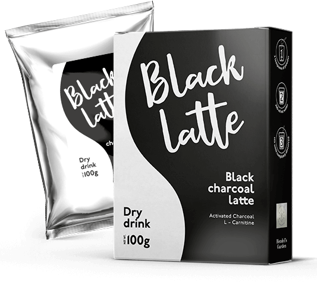

COME DIMAGRIRE (NEL MIO CASO DI 43 KG) E RICOMINCIARE A VIVERE PIENAMENTE. LA MIA SECONDA VITA È INIZIATA A 33 ANNI!
Mi presento, ecco la mia foto di 5 mesi fa, incredibile ma sono sempre io. Fatemi sapere se vi piace con un like:)
Ho deciso di condividere la mia storia, come una ragazza veramente grassa è riuscita a raggiungere il suo obbiettivo: 57 kg sulla bilancia.
Sono sempre stata più o meno magra. Tutto è cambiato dopo il matrimonio. Tante ore trascorse con il marito davanti alla tv con panini, un paio di lattine di birra e due ciotole di patatine, e poi anche un dolce. Tale tempo libero, probabilmente, è familiare a molti. Si, mi sono sposata e in qualche modo mi sono calmata: ho la fede nuziale al dito, cosa si può volere di più? Aumento di peso? La bilancia allora già segnava un record di 80 kg. Ma vabbè! Mio marito mi ama lo stesso.
Ma il peso continuava a crescere, raggiungendo oltre cento chili.

Lentamente mi sono trasformata in una cicciona. E non potevo più negare la triste realtà. Perché invece di due menti, ne avevo quattro. Nelle pieghe sulla pancia potevo nascondere pure i soldi, ve lo dico onestamente: non li avrebbero trovato neanche durante una perquisizione. Il corpo flaccido tremava dal minimo movimento, causando una terribile mancanza di fiato. Prendevo l’ascensore per salire al secondo piano visto che avevo paura di soffocare.
Abbiamo deciso di avere un bambino, ma non era facile. I riproduttologi mi dicevano che era dovuto al sovrappeso, dovevo seguire una dieta rigorosa. Sapevo che era la mia ultima occasione. Mio marito mi sosteneva, non portava a casa prodotti proibiti. Ho perso 17 kg, mi diceva un sacco di complimenti, sulla mia testa è cresciuta di nuovo la corona e tutto è ricominciato da capo. CIBO MIO, VIENI DA ME, QUANTE COSE BUONE E DELIZIOSE. Il peso è tornato addirittura con qualche chilo in più.

A 30 anni ho iniziato ad avere gravi problemi di salute: colesterolo cattivo, pressione alta, cuore, pancreas, diabete di tipo 2 e persino psoriasi. E tutto questo era dovuto al mio culo grasso. Non solo avevo un aspetto terribile, ma mi sentivo così. Un’apatia totale e la depressione.
Anche il rapporto con mio marito è entrato in una crisi profonda. Non facevamo sesso da diversi mesi, prima cercava di sostenermi ma e poi ha quasi smesso di parlare. E mi sono resa conto: NON POTEVA PIÙ CONTINUARE COSÌ!
Ho subito scartato diete e fitness. Non avevo abbastanza forza di volontà e tanto tempo a disposizione. Dovevo salvare urgentemente il mio matrimonio. Ho cominciato a fare ricerche su internet, mi sono rivolta anche a una nutrizionista online. Le ho descritto la mia situazione, ho chiarito che volevo il risultato veloce e irrevocabile. La dottoressa mi ha consigliato .
Mi dispiace di non aver scoperto questo prodotto prima. è un caffè al carbone. Una sorta di disintossicazione per il corpo. I suoi componenti (un tipo speciale di carbone attivo, L carnitina, latte di cocco e omega 3) rimuovono le tossine e bruciano il grasso, bloccano l'assorbimento dei carboidrati e danno un senso di sazietà per un lungo periodo di tempo. È tutto vero. Dopo aver bevuto una tazza di questo caffè, non sentivo fame per 2-3 ore.
Mi misuravo e mi miravigliavo dal fatto che i volumi diminuivano ogni settimana di 2 cm.

Già dopo un mese la bilancia segnava meno 13 kg. E non ho fatto nulla per ottenere questo risultato! Davvero. Ho aggiunto solo e mangiavo come al solito: carne, pasta, pesce, anche dolci, diminuendo notevolmente le porzioni però. Ne ero così entusiasta che ho ordinato anche altre confezioni.
Non voglio annoiarvi raccontandovi lunghe storie, basta guardare di nuovo la mia foto:

In totale, in 5 mesi mi ha aiutato a perdere 43 chilogrammi. Guardo le mie vecchie foto e non voglio tornare indietro. Ora mi sento una donna sana, leggera, bella. Ora i miei occhi brillano di felicità, abbiamo con mio marito la comprensione reciproca, l'amore e la passione. Grazie a Dio, abbiamo lasciato alle spalle i giorni difficili. Dopo la perdita di peso, ho riavuto il desiderio di vivere attivamente. Non ci abbuffiamo più, ma passiamo il fine settimana in movimento.
P.S. Sono più che felice dei miei risultati e credo che potete farcela anche voi. Nei vostri commenti ho visto che il tema della perdita di peso vi è interessante, per questo ho condiviso la mia esperienza. Se voi non riuscite, come me una volta, a dimagrire in modo “normale”, potete ordinare cliccando su questo link . Sono sicura che sarà la vostra salvezza.
Commenti sull'articolo: